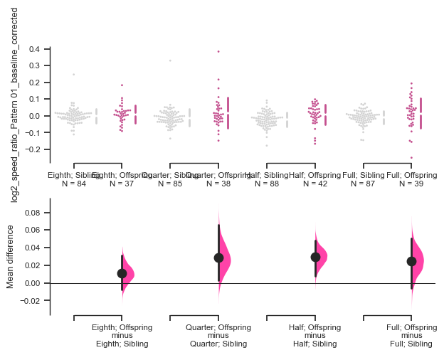
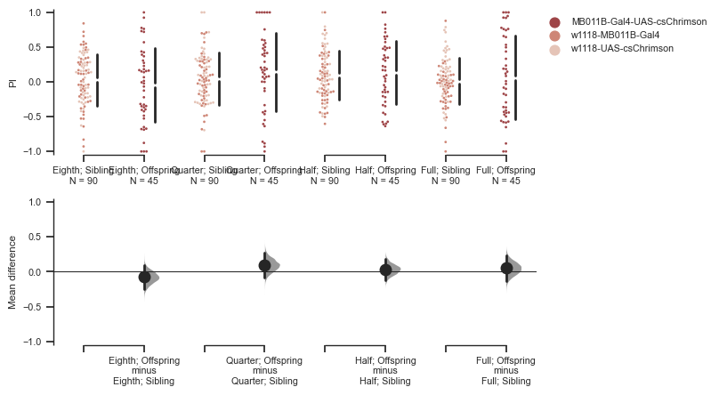

#import relevant libraries
import sys
import os
import glob
import numpy as np
import pandas as pd
import matplotlib as mpl
import seaborn as sns
import datetime as dt
import matplotlib.pyplot as plt
import dabest
#import osarSpeed
#NOTE: SUPPRESSES WARNINGS!
import warnings
warnings.simplefilter(action="ignore", category=RuntimeWarning)
#warnings.simplefilter(action="default", category=RuntimeWarning)File path here:
Input your file name here
addNotes = "MB011B-Gal4-UAS-CsChrimson"
basegenotype = "MB011B"
responder = "UAS-CsChrimson"
##CHECK DRIVE LETTER
#filedirectory = "D:\\Nicole Lee - HDD\\ACC Lab Dropbox\\ACC Lab\\Nicole Lee\\DATA\\OSAR\\"
#filedirectory = "D:\\ACC Lab Dropbox\\ACC Lab\\Nicole Lee\\DATA\\OSAR\\"
filedirectory = "D:\\Nicole Lee - HDD\\ACC Lab Dropbox\\ACC Lab\\Nicole Lee\\DATA\\MBON_Chrimson_Farhan\\Files\\MBON-γ5\\"
baseDirectory = filedirectory + addNotes
#### sets up filename for later - make sure this is correct
if len(addNotes) > 0:
addNotes = "_" + addNotes
#filename = baseDirectory + "/" + str(baseDirectory).split("/", -1)[-1][7:]
filename = baseDirectory + "\\" + basegenotype
filename_AppendDT = "_gen " + dt.datetime.today().strftime('%Y-%m-%d')
##### use this if you need to set filename manually
#filename = baseDirectory + "/" + "201230 R58E02-LexA;VT999036-Gal4 x Dop2R-RNAi;LexAOP-Chrimson_Female"
filename = filename + addNotes + filename_AppendDT
filename'D:\\Nicole Lee - HDD\\ACC Lab Dropbox\\ACC Lab\\Nicole Lee\\DATA\\MBON_Chrimson_Farhan\\Files\\MBON-γ5\\MB011B-Gal4-UAS-CsChrimson\\MB011B_MB011B-Gal4-UAS-CsChrimson_gen 2022-10-25'responder = "Chrimson2"if responder == "Chrimson2":
light_color = "deeppink"
colors = "Reds"
if responder == "ACR":
light_color = "dodgerblue"
colors = "Greens"#check for border shift
osarAnalysis = osar.osar(baseDirectory,
#border_shift_mm = 1.5,
#countlog_folder = "countlog_Full Only",
#countlog_folder = "countlog_Half and Full",
driver = basegenotype)Creating borders for each fly...
Done.
Processing CSV 36 of 36
Summarising results for all flies...
All done.my_color_palette3 = {"Eighth; Sibling" : "lightgray",
"Eighth; Offspring" : light_color,
"Quarter; Sibling" : "lightgray",
"Quarter; Offspring" : light_color,
"Half; Sibling" : "lightgray",
"Half; Offspring" : light_color,
"Full; Sibling" : "lightgray",
"Full; Offspring" : light_color
}Speed analysis
speedratio2 = osarAnalysis.contrasts.log2_speed_ratio.light_speed_against_dark_speed(epoch='first')
speedratio2.mean_diff.plot(raw_marker_size=2, custom_palette = my_color_palette3, legend_kwargs=None, fig_size=(7,5)
)
#, swarm_ylim = (-20, 10), contrast_ylim = (-1, 1)
sns.set(font_scale=0.7, style='ticks')
speedratio2.mean_diffC:\Users\lnico\AppData\Roaming\Python\Python39\site-packages\osar\plot_helpers\plot_helpers.py:204: FutureWarning: The `inplace` parameter in pandas.Categorical.remove_unused_categories is deprecated and will be removed in a future version.
plot_df[c].cat.remove_unused_categories(inplace=True)
C:\Users\lnico\anaconda3\lib\site-packages\dabest\_classes.py:285: FutureWarning: The `inplace` parameter in pandas.Categorical.remove_unused_categories is deprecated and will be removed in a future version.
plot_data[self.__xvar].cat.remove_unused_categories(inplace=True)
C:\Users\lnico\anaconda3\lib\site-packages\dabest\_classes.py:286: FutureWarning: The `inplace` parameter in pandas.Categorical.reorder_categories is deprecated and will be removed in a future version. Reordering categories will always return a new Categorical object.
plot_data[self.__xvar].cat.reorder_categories(all_plot_groups,DABEST v0.3.9999
================
Good evening!
The current time is Tue Oct 25 21:00:25 2022.
The unpaired mean difference between Eighth; Sibling and Eighth; Offspring is 0.0107 [95%CI -0.00771, 0.0312].
The p-value of the two-sided permutation t-test is 0.249, calculated for legacy purposes only.
The unpaired mean difference between Quarter; Sibling and Quarter; Offspring is 0.0284 [95%CI 0.00275, 0.0662].
The p-value of the two-sided permutation t-test is 0.0274, calculated for legacy purposes only.
The unpaired mean difference between Half; Sibling and Half; Offspring is 0.0296 [95%CI 0.00781, 0.0485].
The p-value of the two-sided permutation t-test is 0.0012, calculated for legacy purposes only.
The unpaired mean difference between Full; Sibling and Full; Offspring is 0.0244 [95%CI -0.00625, 0.0508].
The p-value of the two-sided permutation t-test is 0.033, calculated for legacy purposes only.
5000 bootstrap samples were taken; the confidence interval is bias-corrected and accelerated.
Any p-value reported is the probability of observing theeffect size (or greater),
assuming the null hypothesis ofzero difference is true.
For each p-value, 5000 reshuffles of the control and test labels were performed.
To get the results of all valid statistical tests, use `.mean_diff.statistical_tests`C:\Users\lnico\anaconda3\lib\site-packages\IPython\core\pylabtools.py:151: UserWarning: This figure includes Axes that are not compatible with tight_layout, so results might be incorrect.
fig.canvas.print_figure(bytes_io, **kw)
OSAR analysis
osarAnalysis_PI = osarAnalysis.contrasts.pi.time_spent_in_light(baseline_corrected="False", epoch='first')
osarAnalysis_PIC:\Users\lnico\AppData\Roaming\Python\Python39\site-packages\osar\plot_helpers\plot_helpers.py:204: FutureWarning: The `inplace` parameter in pandas.Categorical.remove_unused_categories is deprecated and will be removed in a future version.
plot_df[c].cat.remove_unused_categories(inplace=True)
C:\Users\lnico\anaconda3\lib\site-packages\dabest\_classes.py:285: FutureWarning: The `inplace` parameter in pandas.Categorical.remove_unused_categories is deprecated and will be removed in a future version.
plot_data[self.__xvar].cat.remove_unused_categories(inplace=True)
C:\Users\lnico\anaconda3\lib\site-packages\dabest\_classes.py:286: FutureWarning: The `inplace` parameter in pandas.Categorical.reorder_categories is deprecated and will be removed in a future version. Reordering categories will always return a new Categorical object.
plot_data[self.__xvar].cat.reorder_categories(all_plot_groups,DABEST v0.3.9999
================
Good evening!
The current time is Tue Oct 25 21:00:40 2022.
Effect size(s) with 95% confidence intervals will be computed for:
1. Eighth; Offspring minus Eighth; Sibling
2. Quarter; Offspring minus Quarter; Sibling
3. Half; Offspring minus Half; Sibling
4. Full; Offspring minus Full; Sibling
5000 resamples will be used to generate the effect size bootstraps.osarFig_PI_Meandiff = osarAnalysis_PI.mean_diff.plot(color_col='genotype',
swarm_ylim=(-1.05,1.05),
contrast_ylim=(-1.05,1.05),
custom_palette= colors,
fig_size=(7,5),
#fig_size=(10,7),
swarm_label="PI",
raw_marker_size= 2 )
sns.set(font_scale=0.75)
osarAnalysis_PI.mean_diffDABEST v0.3.9999
================
Good evening!
The current time is Tue Oct 25 21:00:43 2022.
The unpaired mean difference between Eighth; Sibling and Eighth; Offspring is -0.0762 [95%CI -0.255, 0.0931].
The p-value of the two-sided permutation t-test is 0.336, calculated for legacy purposes only.
The unpaired mean difference between Quarter; Sibling and Quarter; Offspring is 0.0953 [95%CI -0.0871, 0.271].
The p-value of the two-sided permutation t-test is 0.252, calculated for legacy purposes only.
The unpaired mean difference between Half; Sibling and Half; Offspring is 0.0343 [95%CI -0.12, 0.183].
The p-value of the two-sided permutation t-test is 0.632, calculated for legacy purposes only.
The unpaired mean difference between Full; Sibling and Full; Offspring is 0.0504 [95%CI -0.131, 0.236].
The p-value of the two-sided permutation t-test is 0.54, calculated for legacy purposes only.
5000 bootstrap samples were taken; the confidence interval is bias-corrected and accelerated.
Any p-value reported is the probability of observing theeffect size (or greater),
assuming the null hypothesis ofzero difference is true.
For each p-value, 5000 reshuffles of the control and test labels were performed.
To get the results of all valid statistical tests, use `.mean_diff.statistical_tests`C:\Users\lnico\anaconda3\lib\site-packages\IPython\core\pylabtools.py:151: UserWarning: This figure includes Axes that are not compatible with tight_layout, so results might be incorrect.
fig.canvas.print_figure(bytes_io, **kw)